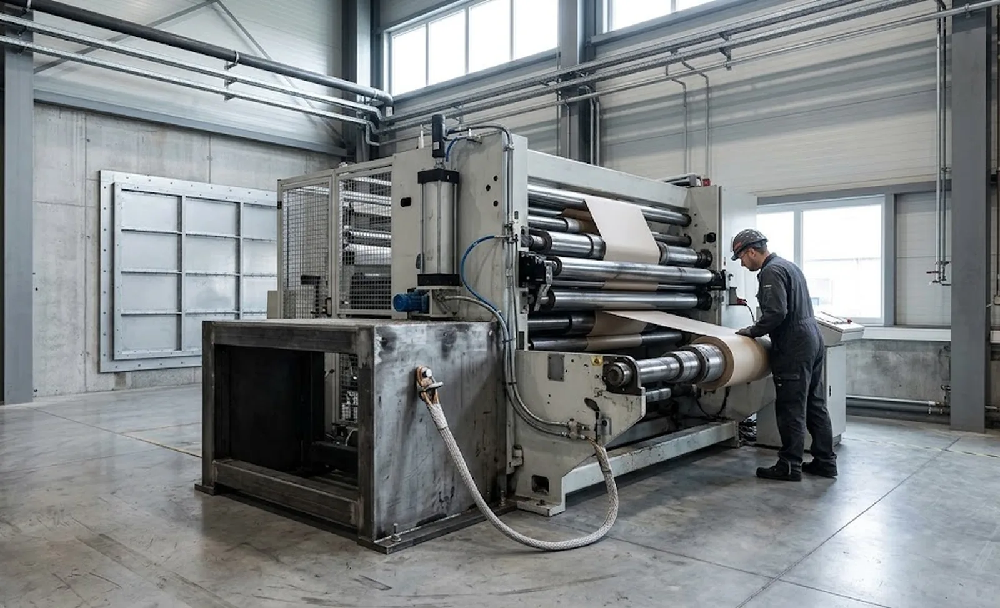
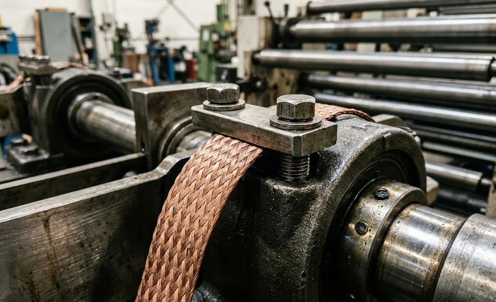

Published October 8, 2026 | By HDPTH Technical Editorial Team

Buyers of slitter rewinders negotiate hard on speed, widths and knife systems, then discover late that the plant’s process safety engineer has questions the supplier cannot answer — and for solvent-coated products those questions stop the shipment. This guide explains what to specify and which documents to demand.
When ATEX applies to slitting and rewinding
The ATEX equipment directive (2014/34/EU) applies where equipment is used in an atmosphere that can become explosive. Usual triggers on a converting line: solvent-based coatings and laminating adhesives that keep releasing vapour after the dryer, printing inks and solvents, and combustible dust created by the slitting action itself. The question is not whether a flammable substance is present, but whether it can accumulate in ignitable concentrations. That judgement is made in a hazardous area classification study of your hall, which produces a zoning drawing — Zone 0/1/2 for gas and vapour, Zone 20/21/22 for dust — and every piece of equipment in a zone must match it.
Zones and equipment categories
The mapping is simpler than the standards make it look. Zone 1 (likely in normal operation) requires Category 2 equipment; Zone 2 (unlikely, short duration) requires Category 3; dust zones mirror the logic. Marking tells you: II 2G is Category 2 for gas, II 3D is Category 3 for dust. A slitter rewinder is rarely certified as one ATEX assembly; motors, switches, light fittings and valves carry their own markings, documented position by position. A quote saying “ATEX version available” without that list is a placeholder, not an offer.
Ignition sources on a slitter rewinder
Converting machines concentrate almost every ignition source the standards list. Static discharge comes first: an ungrounded roller or an insulating film running at speed builds charge easily, and a discharge in a vapour-laden area is a real hazard — the measures in our static control guide become safety-critical here. Friction and heat follow: a seizing bearing or an overheated brake can reach ignition-capable temperatures. Ordinary enclosures, sensors and lamps must become protected equivalents; knives striking foreign objects make mechanical sparks; and hot surfaces must stay below the substance’s ignition temperature — which is why the permitted-materials list matters as much as the hardware.
Earthing, bonding and anti-static design
Good earthing is the cheapest life-saving hardware in the plant. Specify: continuous bonding of the machine frame to the plant earthing system; bonding straps across every roller bearing and section joint that could isolate conductive parts; conductive or dissipative roller coverings inside the zone; dissipative flooring; and earthing clamps for operators before touching the web. Each bond must be verified at commissioning and the values recorded — a machine whose bonding was never measured has not been commissioned.

Secondary measures: inerting, venting, suppression
Where primary prevention cannot exclude an explosive atmosphere, secondary measures limit the consequences. Inerting keeps oxygen below the limiting concentration with nitrogen — common where solvent vapour is unavoidable. Explosion venting directs a deflagration through a rated panel to a safe location, which constrains machine placement in the hall. Suppression injects an extinguishing agent within milliseconds of detecting a pressure rise; containment holds the full design pressure but makes the machine heavy. Coordinate the philosophy with the machine’s own dust extraction system so the two do not fight.
Documentation: what must be in the delivery
| Document | What good looks like | Red flag |
|---|---|---|
| Ignition hazard assessment | Machine-specific study per EN 1127-1 | Generic brochure statement “ATEX compliant” |
| Declaration of Conformity | Covers Machinery Directive and ATEX 2014/34/EU | MD only, “ATEX papers to follow” |
| Component marking list | Every Ex item with category and protection concept | “Motors are Ex, the rest is standard” |
| Operating instructions | Permitted substances, cleaning and grounding procedures | No restriction chapter |
| Bonding verification | Measured resistance values recorded at commissioning | “Grounding per standard” |
Do not treat these as delivery-time paperwork: the assessment and component list should be reviewable during design, and the conformity documents checked at the factory acceptance test. ATEX is one directive among several in our electrical standards guide — but the one most often discovered missing.
Cost drivers and planning
Expect the ATEX delta to concentrate in Ex-rated motors and gearboxes, certified instrumentation, lighting, and the engineering hours for the assessment; secondary measures can exceed the component costs where the process requires them. Two savings exist: a precise zoning drawing prevents over-engineering — buying Category 2 for a Zone 2 machine wastes money on hardware and documentation alike — and ordering the scope with the machine avoids duplicated retrofit engineering. Where regulation drives configuration, it also drives contract structure: put the acceptance criteria in the order, as our performance guarantee guide describes.
Running solvent-coated or dusty webs?
Send HDPTH your zoning drawing and substance list. We configure slitter rewinders with the correct Ex components, earthing scheme and full ATEX documentation — assessed in design and verified at FAT, so the machine is runnable on arrival.
Submit Your Project InquiryFrequently asked questions
When does a slitter rewinder need ATEX protection?
Whenever the web, its coating or its slitting by-products can form a flammable atmosphere in or around the machine: solvent-based coatings and adhesives, inks, release agents and fine combustible dust. If a flammable substance is present in quantities that can create an explosive atmosphere, the equipment in that area falls under the ATEX directives and must be classified, assessed and marked accordingly.
What zone classification should I request for my slitting area?
Zones are set by your site’s hazardous area classification study, not by the machine supplier. Gas atmospheres are Zone 0, 1 or 2; combustible dust creates Zones 20, 21 or 22. Halls running solvent-coated webs typically end up with Zone 2 around the web path and Zone 1 near coating sections. Ask for the zoning drawing, then buy equipment whose category matches or exceeds that zone.
What ignition sources exist on a slitter rewinder?
The main ones are static discharge from ungrounded rollers or webs, friction and heat from failing bearings or nip rollers, sparks from non-Ex electrical enclosures and instruments, mechanical sparks from slitting knives, and hot surfaces on drives and brakes. A proper ignition hazard assessment examines each of these on the specific machine layout — which is why a generic catalogue answer is not acceptable.
Can a standard machine be converted to ATEX later?
Partially, but rarely economically. Motors, enclosures, sensors and light fittings can be swapped for Ex-rated versions and earthing improved. Deeper items — venting or suppression, inerting ducts, anti-static coverings, certified documentation — usually require structural and control changes best designed in from the start, and retrofit costs typically run several times the delta of ordering the machine correctly.
What documentation must come with an ATEX machine?
Require the ignition hazard assessment (EN 1127-1 methodology), the EU Declaration of Conformity covering the Machinery Directive and ATEX 2014/34/EU, marking records for every Ex component, operating instructions covering the permitted substance list, and the grounding verification from commissioning. Missing paperwork means the machine cannot legally run in your zone — check it at FAT, not at the dock.